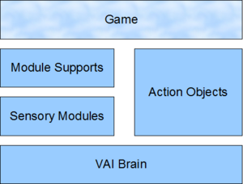

Vortex AI
From C4 Engine Wiki
Vortex AI (VAI/Mutant)
Contents |
Introduction
Vortex AI is a combination of tools and API designed for creation of sophisticated in-game artificial intelligence (NPCs).
Key Features
- Integration with C4 Engine.
- Modular architecture
- Pathfinding
- Action planner.
- Scripting.
- Steering behaviors
- Parallel behavior execution
- Messaging
- Sensors and Emitters
- Graphical editor (Vortex_AI_Editor not compatible with v1.0 yet)
VAI Overview
VAI Package for C4Engine
V1.0 of VAI for C4Engine contains:
- Pre-built VAI library for win32 and win64 with headers.
- C4Editor plugin for NavMesh generation, includes source code;
- Integration library with special type of nodes and basic debug commands, includes source code;
- Modified Demo Game with sample plans and worlds featuring Skeleton, includes source code;
VAI Editor hasn't been updated yet, check plan and config XML format description instead
VAI Definitions and Concepts
- Agent - instance of a NPC inside VAI library.
- Sensory Module - Agent building-block. Depending on implementation may processes sensory input from supports, maintain agent blackboard and manage implementation details of the agent. Module can be viewed as a specific subsystem (weapon system, movement system, etc);
- Brain - Module used only for reasoning, contains Blackboard and Plan;
- Blackboard - brain working memory;
- Module Support - interaction layer between the game and VAI. Main purpose of Module Support is to hide game-related details from the Modules using it. Starting from V1.0 Supports are not mandatory;
- Agent Controller - bridge between VAI Modules and Module Supports (Can be separate from C4 Controller).
- Config - entity describing Agent-specific settings, such as available modules and initial parameters;
- Plan - full list of all possible actions available to the agent, may include action sequences and transition rules. Plans are separate from Config;
- Build - family of compatible Plans and Configs. Compatibility is validated only by VAIEditor at the moment;
- Action - part of an active Plan telling bot what to do, driven by the Brain based on Plan used;
- Action Object - game counterpart of the Action. Action Object implements logic which actually makes character execute VAI plan according to game rules - run, jump, shoot, etc. Action Object provides a way to define update, start and finish methods.
- Query - custom function which can be called from the script, may accept parameters and return a value;
- Query Object - implementation of the specific Query. User may register his own queries;
- Condition Element - special type of plan element evaluating to true or false. Used for all kind of validators;
- Script - any script in VAI scripting language used in conditions, action parameters, queries, handler and broadcast expressions
- Action Parameters - parameters defined by a Plan.
- Message - Instance of VAIMessage (object with sender and data fields) with data being passed between Agents or declaration of a message within config;
- Sender - Agent sending the Message;
- Receiver - Agent receiving the Message;
- Listener Medium - object used to establish Message delivery rules between Message Sender and Receiver (such as vision);
- Medium Snapshot - snapshot of an Agent within real of certain Listener Medium. For example, in case of vision snapshot may contain position and velocity;
- Broadcast - sending messages each step to all other agents capable of receiving it using rules described in broadcast clause of config file used;
- Message Handler - handler for received messages;
- Sensor - entity capable of sensing a Message tied to specific Listener Medium. In-built sensors come in form of viewports and shapes;
- Emitter - optional object limiting extent of coverage of Messages (projecting Messages in certain direction in case of vision), uses same principles as Sensors;
- Mount - virtual node identified by a name. It is used to "group" related Sensors and Emitters for easier positioning.
- Channel (wip) - Message filter for more fine grained control over msg receiving;
- NavMesh - navigation mesh generated on top of level geometry;
- Area - location designated by area marker;
- Sensory Memory - default module for memory management. Holds data about other Agents;
- Memory Record - holds knowledge about other Agent (such as position, velocity, last time seen). User may add additional fields;
- Memory span - duration in ms after which Memory Record is discarded if not updated;
- Blacklisting ('forbidden' flag) - Memory Record is blacklisted if host Agent deems record inaccurate. Forbidden flag is removed automatically if record gets updated;
Agent Architecture
Agent Components
- Sensory Modules - processes sensory input from supports, maintains agent blackboard and manages implementation details of AI. Module can be viewed as a specific subsystem (weapon system, movement system, brain, etc);
- Module Supports - optional interaction layer between the game and VAI. Main purpose of Module Support is to hide game-related details from the Modules using it. Since V1.0 Supports are not mandatory;
- Agent Controller - bridge between VAI Modules and Module Supports (Can be separate from C4 Controller);
- Action - whatever bot is told to do, driven by the Brain based on Plan used;
- Action Object - game counterpart of the Action. Action Object implements logic which actually makes character execute VAI plan according to game rules - run, jump, shoot, etc;
- Message Broadcaster - entity responsible for sending status updates (such as current position of the Agent), broadcast rules are optional;
- Message Receiver - entity testing and handling received messages. By default receiver uses script message handlers defined in config file.
VAI Layers
3 layers are present. Module Supports interact with the game directly, Sensory Modules maintain memory state for VAI Brain to function.
Action Objects are only exception that may violate this hierarchy and interact with all other components on all levels.

Layer interaction
Agent Initialization
Agent structures can be assembled directly by a game code or using set of configuration files. To build Agent 2 types of files are required : *.config and *.plan, both consist of xml structures defining Agent and can be produced in VAIEditor or manually in any XML editor.
- *.config - contains Agent settings in form of list of modules and module parameters (e.g. memory duration, aim accuracy);
- *.plan - defines agent behavior;
Both files must be from the same Build to guarantee compatibility (choice is up to the user, because some plans can work across builds).
Modules
VoH AI has several prebuilt modules. Module can provide specific functionality and can be added to Agents as needed.
Modules have several functions within VoH AI.
- Providing special functionality for actions directly or via ModuleSupport interface.
- Feeding information into agent's blackboard in form of variables for further evaluation.
- providing custom script variables.
- providing custom queries available from scripts.
List of default modules:
| Module | Description |
| Brain | Cognitive module, selects agent actions. |
| Pathfinding | Provides means of finding and following path from point A to point B (using NavMesh). |
| Steering | Collection of simple steering behaviors (Seek, Wander, Separation) |
| Sensory Memory | Keeps track of all sensed agents |
| Targeting | Provides means of choosing and tracking targets. |
For example steering module provides force vector based on active steering behaviors.
VAI Brain
VAI Brain is a module responsible for selecting actions (behavior). Brain brings in several identifiers and queries for use in scripts
Initial Parameters
None
Exported Identifiers
| Identifier | Type | Purpose | Initial value |
| self | AgentReference | Reference to host agent (this) | Value of host agent |
| null | Value | Represents value NULL | value of NullValue |
| vai_action_ms | Integer | Duration of the action within scope. | integer value in ms |
Queries
| Query | Purpose | Parameters | Returns |
| Count | Returns element count in an array | ArrayValue for elements to be counted | Integer element count |
| Max | Returns maximum of 2 numbers | Two parameters, either Integer or float | returns Integer or Float if any parameter is float |
| IsEnemy | Test for enemy, returns false otherwise | AgentReference | Boolean with test result |
| Distance | Distance between 2 points | Two VectorValues representing positions | returns float with distance |
| GetTime | none | Retrieves integer with time | returns integer with simulation duration |
| FindAreaCenter | Finds area location for a named area | String name of an area | VectorValue with coordinates |
| Msg | Creates a message | Message name and 5 optional values in order of appearance in message declaration. | Message |
VAI Sensory Memory
Sensory Memory is a prebuilt sensory module which stores data about all other Agents from the perspective of the host Agent within memory records. Sensory memory is agent's individual storage and is inaccessible to other agents. For global storage user should create separate entity.
Initial Parameters
| Parameter | Desc | Purpose | Default value |
| memorySpan | Integer in ms | Duration after which old MemoryRecords get deleted |
Exported Identifiers
none
Queries
| Query | Purpose | Parameters | Returns |
| AvailableTargets | Returns array of all enemies agent remembers | none | ArrayValue containing AgentReferences |
| MakeMemoryRecord | Updates record age for known agent or creates new MomeryRecord if it didn't exist. | AgentReference | returns MemoryRecord |
| NearestEnemyRecord | Test for enemy, returns false otherwise | VectorValue representing absolute position | ArrayValue containing AgentReferences |
| IsForbidden | Tests if MemoryRecord should be ignored. | none | returns Boolean true if record is blacklisted |
Storage
Sensory memory stores data in form of memory records. Each agent is represented by 1 memory record. Memory duration is governed by memorySpan parameter.
VAI Steering
TODO
Acting and Actions
Acting or executing actions is only visible part of AI behavior from player's perspective. In VAI acting is handled by brain module executing plan defined in *.plan file. Before acting takes place, sensory modules are writing all sensory inputs into a blackboard in a form brain can understand (variables). Variables can be strings, numbers and referenced objects. Plan processes filled data and selects action to be activated. Action is split among two parts VAI part and Game part - Action element is an entity within plan while game action is represented by Action Object provided by user.
- 0 - game module calls Agent::ProcessAI() to update bot behavior
- 1 - Agent calls an update on available sensory modules;
- 1.1 - Sensory module may ask its module support for game-related information (e.g. player position, velocity);
- 1.2 - Sensory support asks game for requested details (e.g. from CharacterController, Player);
- 1.3 - Sensory module writes gathered data into blackboard;
- 2 - Agent executes simulation step on brain;
- 2.1 - Brain processes plan for all plan groups;
- 2.2 - Plan selects action, and calls UserActionObject::Update() to advance action object;
- 2.3 - Active plan element modifies blackboard if necessary;
- 3 - active Action object calls available module supports to gather additional info or execute action on the game side (e.g. updating location info using game data);
- 3.1 - active action object calls available modules to be able to execute action on the VAI side (e.g. traversing path);
- 3.2 - Action object changes world state (e.g. sending C4Message over network, updating HUD, simulating pressing a key);
- 3.3 - Action object changes state of the plan (e.g. declares itself finished or failed. It can be used when logic is too complex to put it in plan expressions);
Goals and Behaviors within tree
VoH AI can be used to model goal based and behavior based agents. goal-based agent can be achieved by using planner element while other prebuilt elements can be used to construct behavior based agents. Both approaches can be successfully used in the same plan.
Plan Organized as a Behavior Tree
Blue - Composite plan elements. Governs action switching.
Green - Actions
Yellow - Expressions, such as start conditions and success conditions.
Parallel execution
Plan elements can be organized in groups to allow parallel execution of the plan. Plan element can be in one group at the same time and only one element from any group can be executed at the same time. All plan elements share same variables. For example NPC should be allowed to walk around and shoot or reload it's weapon (while walking). Solution using grouping would be to put all actions related to movement in one group and other actions (like aiming, shooting, reloading) into another.
Failure or success in one group doesn't interfere with other groups directly but users can create relations among actions using variables stored in brain or forcing to finish or fail actions themselves.
Plan Elements in VAI plans
VAI plan elements are categorized in composite plan elements, actions and others (with special meaning). Not all "plan elements" listed share same properties as during run-time but they are called as such for simplicity sake (to avoid speaking of attributes with attributes). Also they are defined in a similar way to other elements (in *.plan files).
Composite plan elements implement high level logic for switching among actions and may be used for branches of a behavior tree. Composite elements currently supported:
| Class name | Description |
| VAIGeneric (aka Loose Sequence) | Sequence element selects whichever plan element can be run from the list of subnodes and runs it. If the subnode finishes execution with success it selects next allowed plan element. If it encounters plan element which can't be run, it moves to next one. If last of available elements has finished then success is propagated upwards. |
| VAISequence | Strong sequence - same as a Generic but enforces order. If some child cannot be executed then it fails without skipping. |
| VAISelectorPlanElement | Evaluates all children with Utility Expression elements. The child with highest utility value gets executed at any given time. Utility is checked each simulation step. |
| VAIStackPlanElement | Executes sub-nodes in priority. Highest priority active child node is made active. Similar to selector except doesn't use utility functions. |
| VAIFSMPlanElement | Finite state machine node for simple FSM AIs or for switching between high level states. |
| VAIPlannerElement | Special node which allows to build a sub-tree based on Resource and Results of it's children. Accepts strategies. |
Elements with special meaning when put in certain locations within a plan:
| Class name | Description | Location |
| VAIStartConditionElement | Contains condition which is checked to validate immediate parent element | Child of any action or composite element |
| VAISuccessConditionElement | Contains condition which is checked to test if action should be finished with success. | Child of action element |
| VAIFailureConditionElement | Used to test if action has failed | Child of action element |
| VAIUtilityElement | Used to calculate utility of its child, contains expresion for utility calculation | Child of the node whose parent is VAISelectorPlanElement |
| VAITransitionConditionElement | Contains state transitions to other subnodes of VAIFSMPlanElement | Child of the node whose parent is VAIFSMPlanElement |
| TODO other types |
Actions
Actions are designated by class name "VAIAction" and actionName matching an action object registered by the user. Starting with v1.0 actions may be implemented fully or partially inside a plan itself using script elements (startScrip, stopScrip, updateScript). Scripts are executed along with respective methods of associated Action Object (stop script executes after StopAction function).
<planElement actionName="SoundAlarm" class="VAIAction" description="Sounding alarm" groupName="Common">
<startScript><![CDATA[intruder = NearestEnemyRecord(self.position);]]></startScript>
<updateScript><![CDATA[intruder ? Msg("IntruderDetectedAtPos", intruder.agent, intruder.position, intruder.invisTime).Send("Sound", "ESiren", 0)]]></updateScript>
<actionParam paramName = "soundName"><![CDATA["loudNoise2"]]></actionParam>
<actionParam paramName = "alarmSeverity"><![CDATA[1]]></actionParam>
</planElement>
Parameters can be passed directly via constants (as shown above) or using variables.
Action Objects
Action objects are game-side counterpart of the action. User defined action should subclass VAIControllerActionObj, there are several functions worth overriding:
| Function name | Description |
| Preprocess | Gets called once, when plan is initialized |
| StartAction | Called each time action starts |
| StopAction | Called each time action fails or finished |
| UpdateAction | Called each simulation step while action is active |
Other useful functions
| Function name | Description |
| ActionFinished | Forcibly finishes action within itself with success (for example, if bot was executing Aim action and reached best aim possible) |
| ActionFailed | Forcibly fails action within itself (in case if it is clear that action cannot succeed, such as route not valid any more, or out of ammo while shooting) |
| GetActionStatus | Returns current status of the action (for example when it is useful to know if action failed or succeeded while in StopAction) |
| GetParam | Returns VAIValue by index specified. Index starts from 0 and depends on order of actionParam elements |
ActionFinished and ActionFailed should be use with caution in order to not overlap with data driven options given by Success and Failure conditions within a plan.
In order to register your own action you must define a construction function (typedef VAIUserActionObject *ObjConstructionProc();). After that you must use agent registration interface to register your construction proc:
VAI::VAIAgentRegistrationInterface *skeletonAgentReg = VAI::TheAgentSystem->RegisterAgent("skeleton", nullptr);
//registering actions
skeletonAgentReg->RegisterActionObj("Stand", &(AISkeletonStandActionObj::ConstructActionObj));
...
In example above build is set to "skeleton" (an AI archetype / family mentioned earlier). You can tell verify archetype by the root node in your config files. In case of skeleton it will always be <vai name="skeleton">.
Messaging
Starting from v1.0 agent interaction and sensory system is based on messaging. It is much more flexible than previous way of managing sensory inputs hence is superseding VAISensoryAnalyzer interface. When messaging is used, most of that bot "sees" or "knows" is a result of it receiving a message. NPCs who have appropriate message handler receive message and update their world view accordingly. For example, in the integration sample "skeleton fight" skeletons are broadcasting their position to all other skeletons each frame. Message handlers take a note of a sender once a message is received.
Message Mediation
Messages are always passed through a mediator (Medium Listener) to establish receiving rules for the message. There are several mediators present by default:
- Link - wip
- Presence - message is always handled
- Vision - message is handled if sender's snapshot can be detected by any Vision sensor and that line of sight is clear from vision center to the snapshot
- Sound - message is handled if sender's snapshot can be detected by any Sound sensor, no line of sight required
User may register custom mediator by subclassing from VAIMediumListener and registering it.
Each agent may have only 1 medium listener of a particular type and it gets assigned to the agent automatically if there is at least one message handler dealing with such medium. Medium listeners do not have any common settings. At the moment there exists only one setting for Vision, identifying a special location which will be treated as eye location for raycasts:
<listeners> <mediumInfo mediumName="Vision" specialMount="Eyes"/> <!-- it could also be a name of any used mount with sensors or emitters --> ... </listeners>
Messages
VAI Message is a simple container for name & value pairs. Messages are identified by names. Message definitions are global (Currently there is no global config file, make sure that definition for the same message never differs across configs) and they must be defined in the config file of a bot which intends to use the message.
Fields and Definition
Message has several built-in fields.
| Field | Description |
| sender | Default field of type AgentReference containing reference to the sending Agent |
| Add | Member function for setting field value. Accepts two parameters - field name and value. Returns a reference to updated message. |
| Send | Member function for sending a message. Requires 3 parameters (in order) : medium name, emitter name (optional), channel name (optional) |
User may define any amount of additional fields within rules of VAI scripting system. Definitions should go inside "messages" clause of the config. Sample message definition with user defined fields "subject" and "position":
<messages>
<msg name="AgentPosition">
<field type="Ref" name="subject"/>
<field type="Vector" name="position"/>
</msg>
</messages>
Message itself doesn't know anything about its intended use hence same message may be reused for different scenarios.
Sending Message using broadcast
Broadcast is a special clause containing send rules. Example with a single send rule is listed below
<broadcast>
<send medium="Vision" msg="AgentPosition">
<params>
<param><![CDATA[ self ]]></param>
<param><![CDATA[ self.position ]]></param>
</params>
</send>
</broadcast>
Broadcast clause executes each simulation step, walks through all send rules in an attempt to send a message. In the example agent sends message AgentPosition about itself to everyone who listens for such messages using Vision.
Sending Message from a script
Message may be sent from a script using Msg and Send queries.
Msg("AgentPosition", self, self.position).Send("Vision");
Sending Message directly from the game code
Sometimes there is a need to notify NPC about some game event which is not tightly coupled with AI. Example for such use is sending message when skeleton (from C4 integration) gets hit with a sword.
VAI::VAIMessage *msg = VAI::TheMAS->NewMessage("AgentPosition", GetAgentAI(), nullptr, "Presence", 0);
msg->SetValueByIndex(0, *GetAgentAI()->GetAgentValue());
msg->SetValueByIndex(1, *(GetAgentAI()->GetAgentValue()->GetFieldValue("position")));
msg->BuildMsgValue(GetAgentAI());
VAI::TheMAS->SendPrivateMessage(msg, character->GetAgentAI());
Message Handlers
Message handlers allow Message to be received and processed. Message handler has several important attributes:
- Name - registered handler type. ScriptHandler (which executes Scripts) is provided by library. User may provide custom handlers;
- Medium - Medium for which to process messages;
- Message name - user defined name of the message Handler is supposed to process;
- Sensor name - optional sensor filter;
Script Message Handlers
ScriptHandler has means of specifying validator (optional) expression in form of a VAI Script and expression for message processing. If validator is specified then expression gets evaluated only if validator returns true. In example below NPC updates MemoryRecord only if message field "subject" refers to an enemy:
<handlers>
<handler name="ScriptHandler" medium="Vision" msg="AgentPosition">
<validator><![CDATA[IsEnemy(msg.subject)]]></validator>
<expression><![CDATA[ MakeMemoryRecord(msg.subject).Copy("position", "oldPos").Set("position", msg.position).SetTimerIfTrue("invisTime", 0, msg.sender == msg.subject)]]></expression>
</handler>
</handlers>
Sensors
Sensors are used by MediumListeners to detect incoming messages. MediumListener considers a message only if at least one sensor used detects origin of the message. Currently sensors are used by Vision and Sound. VAI comes with 2 main types of sensors:
- Shape Sensor - shapes including Box and Sphere;
- Sphere - sphere with only required attribute - radius;
- Box - box with optionally predefined sizeX, sizeY, sizeZ;
- Viewport Sensor - "3d viewport" with view direction, max distance and H&V viewing angles (distance, degreesVertical, degreesHorizontal);
Sensors are identified by name and can be grouped for easier positioning using "mount" attribute. Example showing definitions of sensors:
<listeners>
...
<sensors>
<sensor mount="Head" name="SkeletonHearing" medium="Sound" type="Shape" shape="Sphere" radius="20.0" />
<sensor mount="Head" eval="1" name="SkeletonVision" medium="Vision" type="Viewport" distance="15.0" degreesVertical="45" degreesHorizontal="60" />
</sensors>
...
"eval" has a special meaning and is important part of concept behind VAI. VAI allows for agents to be deceived. It allows for use cases when agents lie to each other. Some sender may lie to receiver and normally it would not have means of validating false data stored in Sensory Memory. Eval tells VAI that particular Sensor should be used for continuous evaluation of data in MemoryRecords. If such Sensor detects that record should be updated but it for some reason it didn't, then such record is blacklisted (marked forbidden). Such mechanism doesn't cover all possible scenarios where some data could be tested (because it relies on things that can be sensed by sensors) but it reduces complexity of a behavior logic significantly.
Emitters
Emitters serve to limit influence of a message or in some cases override sensors. Emitters are used only upon sending a message and are optional. Emitters follow same configuration rules as sensors, with some exceptions though - emitters do not have eval but have a special flag overrideRecipientSensor. If it is set, then coverage of a sensor is ignored.
<emitters>
...
<emit name="ESiren" medium="Sound" type="Shape" shape="Box" overrideRecipientSensor="1"/>
...
</emitters>
And here is an example of sending a message using emitter:
<planElement actionName="SoundAlarm" class="VAIAction" description="Sounding alarm" groupName="Common">
<planElement class="VAISuccessConditionElement" description="setting alarm duration" groupName="Common">
<condition><![CDATA[ vai_action_ms > 30000 || intruder == null ]]></condition>
</planElement>
<updateScript><![CDATA[intruder ? Msg("IntruderDetectedAtPos", intruder.agent, intruder.position, intruder.invisTime).Send("Sound", "ESiren", 0)]]></updateScript>
</planElement>
Emitters can be also used within broadcast rules.
TO BE CONTINUED
TODO for 2013
- More documentation;
- VAIEditor update for 1.0;
- Plan visual debugging;
- Fuzzy logic;